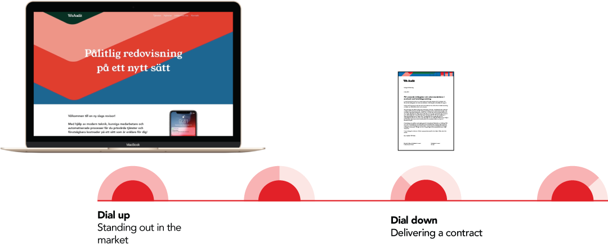

A student project done with classmates from Hyper Island. We were tasked with the mission to design a brand strategy that communicates that the auditing agency We Audit is revolutionary in the market, user-friendly, transparent, fun as well as competent and knowledgeable.
Through the research we found that the key insight was that We Audit had an fun, friendly and informal internal culture their customers noticed and enyojed. However, it is also extremely important for their customers to feel that We Audit does a professional job.
To both let internal and appreciated friendly internal culture shine through and show We Audit's professionality and competence we came up with a layered brand strategy for the visuals.
The primary personality communicates that We Audit is competent and adaptive. The secondary personality communicates that We Audit is friendly, fun and revolutionary. The logo, typography and layout is elements of the primary personalty. Patterns, photography and bolder colors is elements of the secondary personality.

By mixing the two personalities We Audit has a solid brand identity that can adapt to different customer touchpoints and needs.

To stand out in the market, the secondary personality is dialed up.

To let the customer focus on the quality and contents of a report, the secondary personality is dialed down.